Reward and Transition functions
- Filename: func.m
- Authors: Matt Reimer
- Created: 07/08/17
- Purpose: Function for determining expected reward and catch for a fishery choice.
Contents
Description
The function func returns the expected reward and catch for a single fishery choice.
Reward: The expected reward for vessel 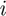 selecting fishery 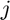 at time 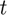 is:
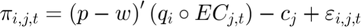
where 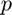 is a vector of exvessel prices, 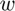 is a vector of expected lease prices for quota,  is a vector of expected catch, 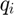 is vector of catchability coefficents, 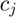 is the cost of fishing in fishery , 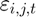 is an idiosyncratic shock that is observed by the fisher but not by the researcher, and 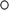 represents element-wise multiplication.
is a vector of expected catch, 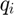 is vector of catchability coefficents, 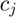 is the cost of fishing in fishery , 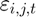 is an idiosyncratic shock that is observed by the fisher but not by the researcher, and 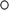 represents element-wise multiplication.
Catch: The catch received by fishery after choosing to fish in fishery in period is equal to:
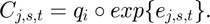
function [out1] = func(flag,x,t,i,e,sig,m,EC,w)
Input Arguments:
- flag = signal for reward or transition function;
- x = the action variable (fishery);
- t = time period;
- i = vessel;
- e = random variable determining catch;
- sig = random variable representing "signalling error";
- m = a structure of parameter values;
- EC = an array of expected catch used in reward function and constraints;
- w = expected quota lease prices.
Output Arguments:
For the reward (flag='f'), the function provides: * out1 = the value of the current period's reward.
For the transition (flag='g'), the function provides: * out1 = the value of the current period's catch.
Notes:
Eventually, the reward function will be revised to include 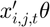, where 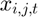 is a vector of state variables and 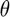 is a vector of structural parameters to be estimated.
Function parameters
p = m.params{1}; % exvessel price vector
c = m.params{2}; % fishing cost
q = m.space{3}; % Catchability coefficient
sig = evrnd(0,1,fish+1);
Reward Function
switch flag case 'f'
out1 = ((q(:,i)').*EC(x,:,t))*(p - (w')) - c(x) + sig(x); % Reward
Transition Function
case 'g' C = squeeze(exp(e(:,:,t,i))); % Actual Catch: a function of the realized shock out1 = (q(:,i)').*C(x,:); end
end